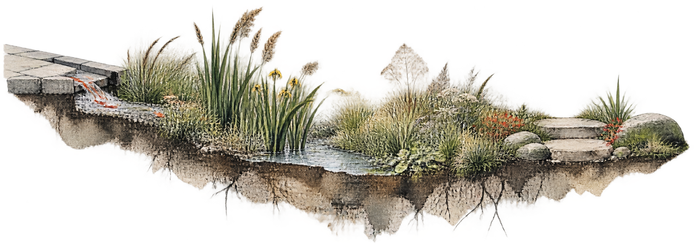
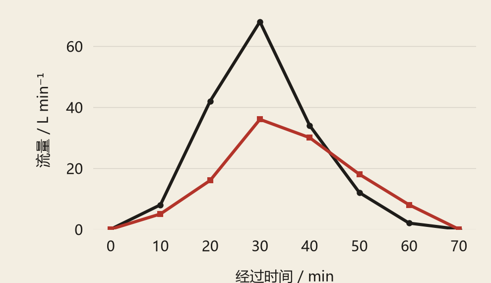

城市雨洪 · 概念与过程
让雨，
留下来。
把雨水从铺装边缘引向植物浅洼，用土壤、草木与开放空间组织一处日常景观。本页为概念构想，数据另作示例展示。

场地概念插画，不对应实际测量地点或工程构造。
B / PROCESS & EVIDENCE
-47.1%
示例 B相对示例 A的峰值变化
示例 A68L/min峰值时刻 30 min
示例 B36L/min峰值时刻 30 min
示例径流过程 / 完整显示所给观测窗口
示例 A示例 B

两条曲线均为虚构演示数据，不是实测、校准模型或设施效果证据。不推断因果、统计显著性与长期表现。